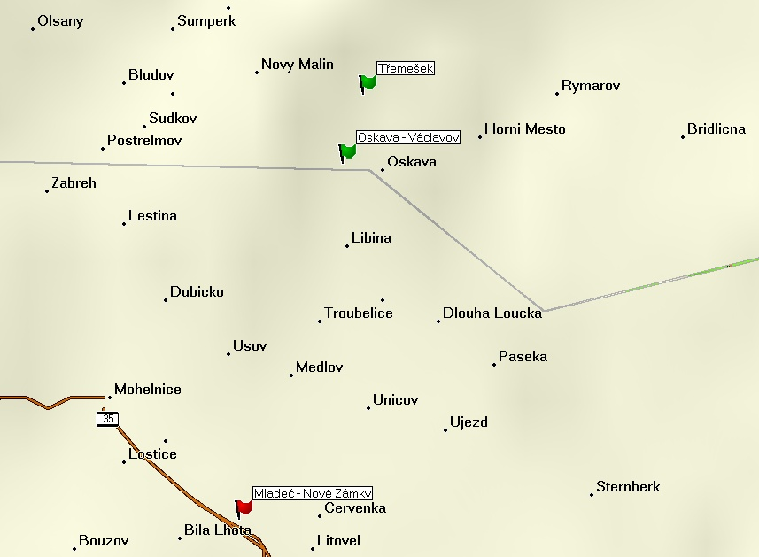

| Historisches Land: | Mähren |
| Bestandteile der Herrschaft: | Mährisch Aussee (Úsov), Pinke (Benkov), Bezděkov, Trübenz (Břevenec), Dörfl (Dědinka), Hliwitz (Hlivice), Grätz (Hradec), Markendorf (Hradečná), Kloppe (Klopina), Königlosen (Králová), Deutschlosen (Lazce), Mährisch Liebau (Moravská Libina), Lepinke (Lipinka), Meedl (Medlov), Měník, Merotein (Mirotínek), Mladeč, Bladensdorf (Mladoňov), Moskelle (Mostkov), Waldheim (Nemrlov), Oskau (Oskava), Waitzenfeld (Pančava), Pissendorf (Pískov), Polaitz (Police), Řimice, Steinmetz (Stavenice), Schönwald (Šumvald), Tschimischl (Třemešek), Treublitz (Troubelice), Storzendorf (Zadní Újezd), Wenzeldorf (Václavov), Veleboř, Neuschloss (Nový Zámek), Stadt Littau (Litovel) mit Dörfern Pirnik (Brníčko), Červenka, Chořelice, Mezice, Aschmeritz (Nasobůrky), Tři Dvory, Víska. |
| Ursprüngliche Forstreviere: | Forstamt Neuschloss (Nové Zámky): Forstreviere Lautsch (Mladeč), Oskau (Oskava), Tschimischl (Třemešek), Mähr.Aussee (Úsov), Weleboř (Veleboř). |
Übersichtskarte der Gedenksteine auf der Herrschaft:

Dokumentierte Denkmäler:


{kind=link}
{kind=link}